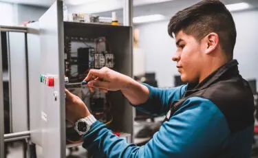
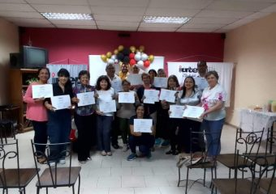

Tu futuro comienza
en el IUTEPI
Formamos Técnicos Superiores Universitarios en tecnología y administración. Modalidades presencial, semipresencial y virtual para adaptarse a tu vida.
Nuestras Carreras
Tres programas de Técnico Superior Universitario diseñados para el mercado laboral actual. Pensum completo en solo 3 años.
Análisis de Sistemas
Diseña, desarrolla y administra sistemas informáticos. Domina la programación, bases de datos, redes y desarrollo web.

Electrónica
Diseña circuitos electrónicos, sistemas de automatización y placas de circuito impreso. Alta demanda en la industria manufacturera.
Administración Industrial
Gestiona empresas industriales y comerciales con dominio en contabilidad, finanzas y tributación. Tres menciones disponibles.
La diferencia IUTEPI
Más de cinco décadas formando profesionales técnicos de alto nivel para Venezuela y el mundo.
Tecnología Actualizada
Laboratorios equipados con herramientas reales del mercado laboral para que la transición al trabajo sea inmediata.
Duración Competitiva
Solo 3 años para obtener tu título de TSU y comenzar tu carrera profesional con alta demanda en el mercado.
Modalidad Virtual
Estudia desde cualquier lugar con nuestra plataforma Moodle. Diseñada para quienes trabajan o viven en otra ciudad.
Cobertura Nacional
Cuatro sedes en Valencia, Carabobo, Venezuela
Alta Empleabilidad
El pensum está diseñado junto al sector productivo para garantizar que nuestros egresados sean inmediatamente contratables.
Formación Integral
Combinamos excelencia técnica con valores humanos y ciudadanía responsable en cada programa académico.
Estudia a tu ritmo
Elige la modalidad que mejor se adapte a tu horario, ubicación y estilo de vida.
Presencial
Clases todos los días en nuestras instalaciones. Ideal para bachilleres recientes que pueden dedicarse de tiempo completo.
Semipresencial
Asiste los sábados y complementa con actividades en línea durante la semana. La opción preferida de quienes trabajan.
Virtual / A Distancia
100% en línea a través de la plataforma Moodle. Sin desplazamientos, con acceso a materiales y clases en cualquier momento.
Lo que dicen nuestros estudiantes
"El IUTEPI me preparó con herramientas reales del mercado. Conseguí empleo en una empresa de tecnología antes de graduarme. Los docentes te exigen y eso marca la diferencia."
"Estudié en modalidad semipresencial mientras trabajaba de lunes a viernes. La estructura me permitió no descuidar ninguna de las dos cosas. Ahora tengo mi propio taller de electrónica."
"La carrera de Administración Industrial me dio conocimientos de contabilidad y tributos que aplico a diario. La mención en Tributos fue clave para conseguir mi posición actual."
Vida Universitaria
Conoce nuestras instalaciones, actividades y el ambiente estudiantil de nuestra institución.

Forma parte del IUTEPI
Inscríbete en nuestra institución y comienza una carrera de alta demanda en solo 3 años. Consulta los requisitos y ven a conocernos.